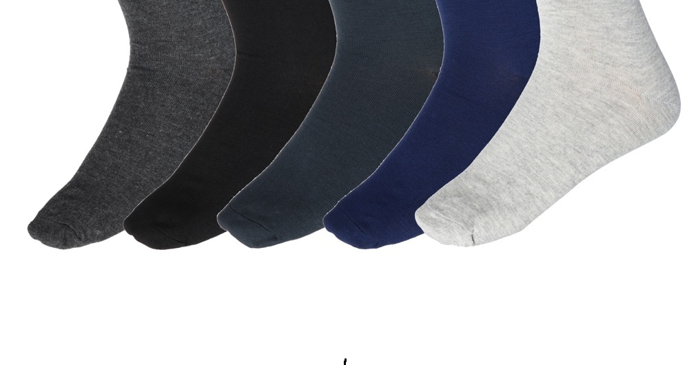

EXCLUSIVE
By Reginald P. Nonsense • 14 minutes ago
Scientists Confirm: Left Socks Disappear 73% Faster Than Right Socks

In a groundbreaking study that no one asked for, researchers at the Institute of Pointless Discoveries have determined that left socks vanish from dryers at a significantly higher rate than their right counterparts. "We're not sure why," admitted lead researcher Dr. Oliver Clothesoff. "But we spent $2.3 million finding out."
The study involved tracking 1,000 pairs of socks over six months. Results showed that while right socks disappeared at a rate of 12%, left socks vanished at an alarming 85% rate. "This changes everything," said Dr. Clothesoff, before realizing it actually changes nothing at all.
Filed under: SCIENCE, ABSURDITY
42 comments